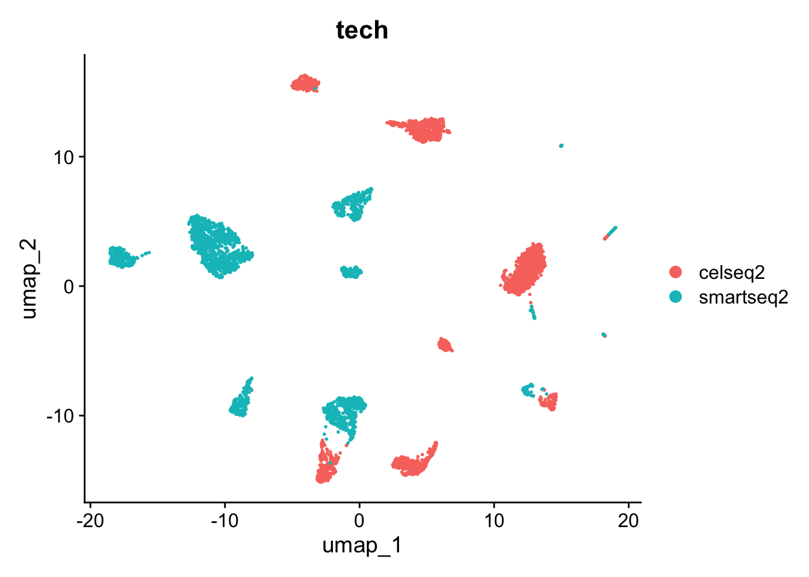
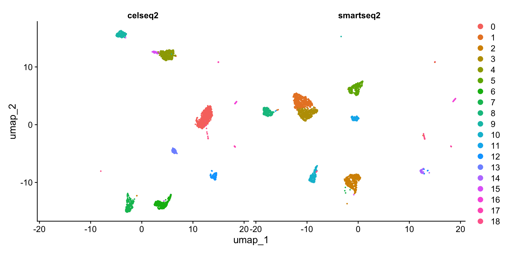
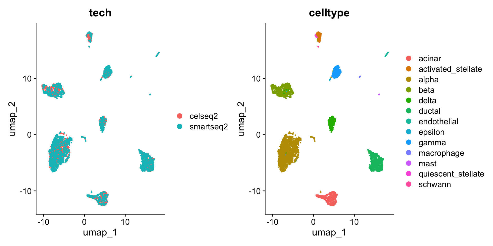
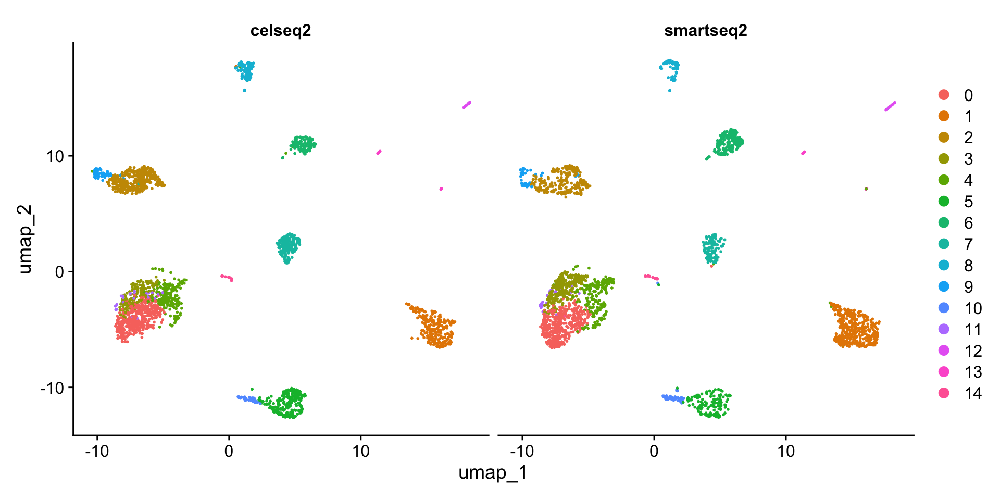
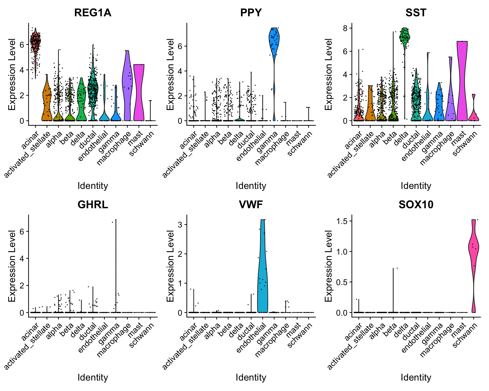
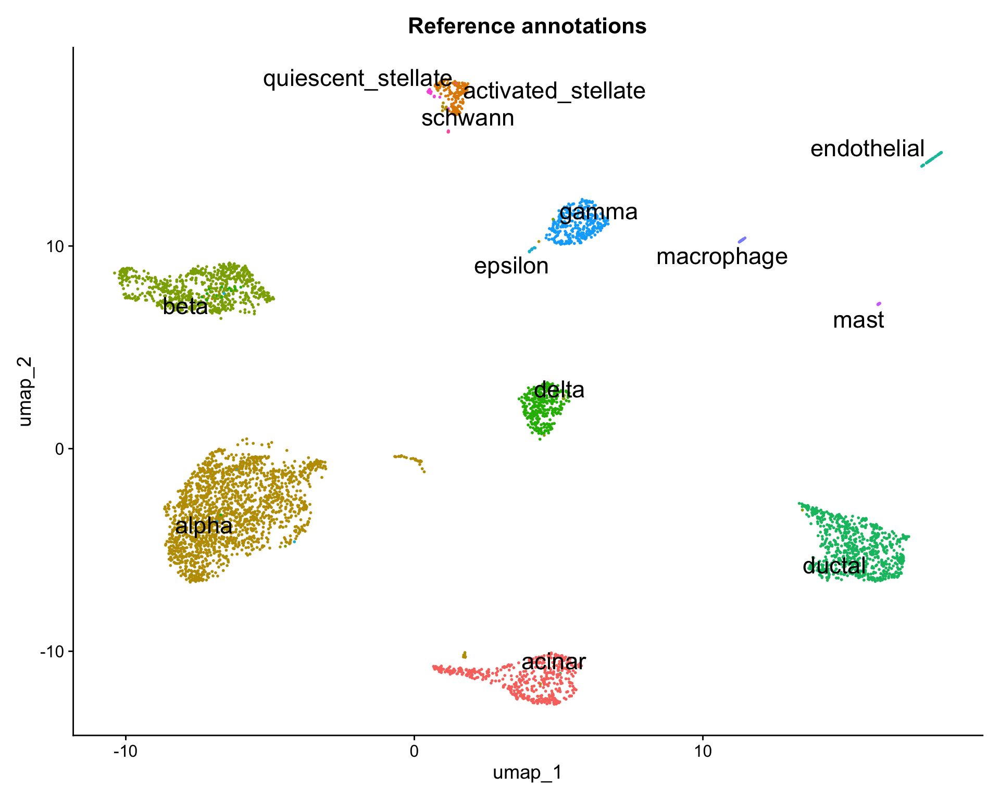
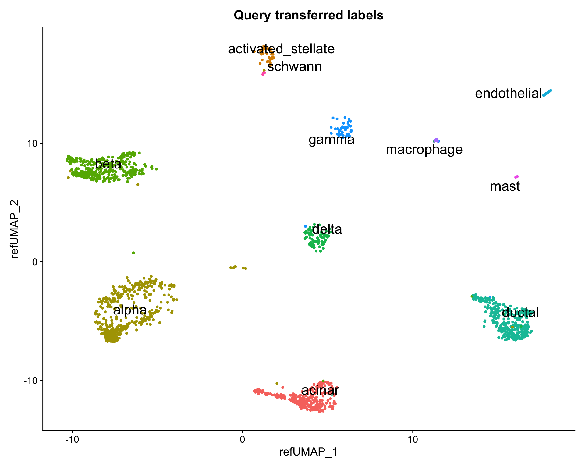

```{r}
#| eval: false
library(SeuratData)
InstallData("panc8")
library(Seurat)
panc8 <- LoadData("panc8")
```12 基于参考集的细胞注释
原文：Mapping and annotating query datasets
原文发布日期：2023年10月31日
In this vignette, we first build an integrated reference and then demonstrate how to leverage this reference to annotate new query datasets. Generating an integrated reference follows the same workflow described in more detail in the integration introduction ( Chapter 10 ). Once generated, this reference can be used to analyze additional query datasets through tasks like cell type label transfer and projecting query cells onto reference UMAPs. Notably, this does not require correction of the underlying raw query data and can therefore be an efficient strategy if a high quality reference is available.
12.1 构建参考数据集
For the purposes of this example, we’ve chosen human pancreatic islet cell datasets produced across four technologies, CelSeq (GSE81076) CelSeq2 (GSE85241), Fluidigm C1 (GSE86469), and SMART-Seq2 (E-MTAB-5061). For convenience, we distribute this dataset through our SeuratData package. The metadata contains the technology (tech column) and cell type annotations (celltype column) for each cell in the four datasets.
数据读取
从本地下载好的数据读取：
panc8 <- readRDS("data/panc8.rds")
panc8An object of class Seurat
34363 features across 14890 samples within 1 assay
Active assay: RNA (34363 features, 0 variable features)
2 layers present: counts, datacolnames(panc8)[1:5][1] "D101_5" "D101_7" "D101_10" "D101_13" "D101_14"rownames(panc8)[1:5][1] "A1BG-AS1" "A1BG" "A1CF" "A2M-AS1" "A2ML1" head(panc8@meta.data, 5) orig.ident nCount_RNA nFeature_RNA tech replicate assigned_cluster
D101_5 D101 4615.810 1986 celseq celseq <NA>
D101_7 D101 29001.563 4209 celseq celseq <NA>
D101_10 D101 6707.857 2408 celseq celseq <NA>
D101_13 D101 8797.224 2964 celseq celseq <NA>
D101_14 D101 5032.558 2264 celseq celseq <NA>
celltype dataset
D101_5 gamma celseq
D101_7 acinar celseq
D101_10 alpha celseq
D101_13 delta celseq
D101_14 beta celseqtable(panc8$tech)
celseq celseq2 fluidigmc1 indrop smartseq2
1004 2285 638 8569 2394 可以看到，该数据包含了5种单细胞转录组测序技术获得的单细胞数据。
As a demonstration, we will use a subset of technologies to construct a reference. We will then map the remaining datasets onto this reference. we will use data from 2 technologies (celseq2和smartseq2) for the reference。

数据预处理
标准化、找高变基因、归一化、降维、聚类、可视化：
pancreas.ref <- NormalizeData(pancreas.ref)
pancreas.ref <- FindVariableFeatures(pancreas.ref)
pancreas.ref <- ScaleData(pancreas.ref)
pancreas.ref <- RunPCA(pancreas.ref)
pancreas.ref <- FindNeighbors(pancreas.ref, dims = 1:30)
pancreas.ref <- FindClusters(pancreas.ref)Modularity Optimizer version 1.3.0 by Ludo Waltman and Nees Jan van Eck
Number of nodes: 4679
Number of edges: 174953
Running Louvain algorithm...
Maximum modularity in 10 random starts: 0.9180
Number of communities: 19
Elapsed time: 0 secondspancreas.ref <- RunUMAP(pancreas.ref, dims = 1:30)
DimPlot(pancreas.ref, group.by = c("celltytpe", "tech"))
DimPlot(pancreas.ref, split.by = "tech")
可以看到，不同的测序技术间的细胞类型差异较大。因此需要对数据进行整合，方法同 Chapter 10 一致。
pancreas.ref <- IntegrateLayers(object = pancreas.ref,
method = CCAIntegration,
orig.reduction = "pca",
new.reduction = "integrated.cca",
verbose = FALSE)
# 重新聚类
pancreas.ref <- FindNeighbors(pancreas.ref,
reduction = "integrated.cca",#更改降维来源为"integrated.cca"
dims = 1:30)
pancreas.ref <- FindClusters(pancreas.ref)Modularity Optimizer version 1.3.0 by Ludo Waltman and Nees Jan van Eck
Number of nodes: 4679
Number of edges: 190152
Running Louvain algorithm...
Maximum modularity in 10 random starts: 0.8680
Number of communities: 15
Elapsed time: 0 seconds# 重新降维
pancreas.ref <- RunUMAP(pancreas.ref,
reduction = "integrated.cca", #更改降维来源为"integrated.cca"
dims = 1:30)
DimPlot(pancreas.ref, group.by = c("tech", "celltype"))
DimPlot(pancreas.ref, split.by = "tech")
可以看到，和此前相比，整合后不再有不同测序技术间细胞类型的差异。
12.2 基于参考集的细胞注释
Seurat also supports the projection of reference data (or meta data) onto a query object. While many of the methods are conserved (both procedures begin by identifying anchors), there are two important distinctions between data transfer and integration:
In data transfer, Seurat does not correct or modify the query expression data.
In data transfer, Seurat has an option (set by default) to project the PCA structure of a reference onto the query, instead of learning a joint structure with CCA. We generally suggest using this option when projecting data between scRNA-seq datasets.
Seurat支持将参考数据集的注释信息（meta.data）映射到查询数据集上。基于Seurat的数据注释映射（data transfer）和上面的数据整合（integration）之间许多步骤都是类似的（例如这两个过程都是从识别锚点开始的），但它们之间有两个重要的区别:
- 在data transfer中，Seurat不矫正或修改待查询数据集的表达矩阵。
- 在 data transfer中，Seurat有一个选项（默认设置），可以将参考基因集的PCA结构投影到查询对象上，而不是使用CCA学习联合结构。
After finding anchors, we use the TransferData() function to classify the query cells based on reference data (a vector of reference cell type labels). TransferData() returns a matrix with predicted IDs and prediction scores, which we can add to the query metadata.
这里为了演示，还是选取panc8中的两个测序技术（“fluidigmc1”和”celseq”）的数据作为查询数据集。
pancreas.query <- subset(panc8, tech %in% c("fluidigmc1", "celseq"))
# 标准化查询数据集
pancreas.query <- NormalizeData(pancreas.query)
# 寻找transfer锚点
pancreas.anchors <- FindTransferAnchors(reference = pancreas.ref,
query = pancreas.query,
dims = 1:30,
reference.reduction = "pca")
# 映射数据
predictions <- TransferData(anchorset = pancreas.anchors,
refdata = pancreas.ref$celltype,
dims = 1:30)
dim(predictions)[1] 1642 15predictions[1:5, 1:3] predicted.id prediction.score.alpha prediction.score.endothelial
D101_5 gamma 0 0
D101_7 acinar 0 0
D101_10 alpha 1 0
D101_13 delta 0 0
D101_14 beta 0 0可以看到映射之后生成的
predictions是一个数据框，将查询数据集中的每一个细胞和预测的细胞类型（predicted.id）一一对应，并给出了这种预测的分数。
接下来，只需将predictions作为metadata添加到查询数据集：
pancreas.query <- AddMetaData(pancreas.query,
metadata = predictions)
colnames(pancreas.query@meta.data) [1] "orig.ident" "nCount_RNA"
[3] "nFeature_RNA" "tech"
[5] "replicate" "assigned_cluster"
[7] "celltype" "dataset"
[9] "predicted.id" "prediction.score.alpha"
[11] "prediction.score.endothelial" "prediction.score.delta"
[13] "prediction.score.beta" "prediction.score.ductal"
[15] "prediction.score.acinar" "prediction.score.mast"
[17] "prediction.score.gamma" "prediction.score.activated_stellate"
[19] "prediction.score.macrophage" "prediction.score.quiescent_stellate"
[21] "prediction.score.epsilon" "prediction.score.schwann"
[23] "prediction.score.max" table(pancreas.query$predicted.id)
acinar activated_stellate alpha beta
262 39 436 419
delta ductal endothelial gamma
73 330 19 41
macrophage mast schwann
15 2 6 现在的查询数据集中就多出了映射后的细胞注释信息。
Because we have the original label annotations from our full integrated analysis, we can evaluate how well our predicted cell type annotations match the full reference.
table(pancreas.query$predicted.id == pancreas.query$celltype)
FALSE TRUE
63 1579 In this example, we find that there is a high agreement in cell type classification, with over 96%（1579/1642） of cells being labeled correctly.
To verify this further, we can examine some canonical cell type markers for specific pancreatic islet cell populations.
VlnPlot(pancreas.query,
c("REG1A", "PPY", "SST", "GHRL", "VWF", "SOX10"),
group.by = "predicted.id")
Note that even though some of these cell types are only represented by one or two cells (e.g. epsilon cells), we are still able to classify them correctly.
UMAP映射
We also enable projection of a query onto the reference UMAP structure. This can be achieved by computing the reference UMAP model and then calling MapQuery() instead of TransferData().
pancreas.ref <- RunUMAP(pancreas.ref,
dims = 1:30,
reduction = "integrated.cca",
return.model = TRUE)
pancreas.query <- MapQuery(anchorset = pancreas.anchors,
query = pancreas.query,
reference = pancreas.ref,
refdata = list(celltype = "celltype"), #需要transfer的参考数据集的列
reference.reduction = "pca",
reduction.model = "umap")可以看到现在的查询数据集pancreas.query中有了降维信息（reduction）。这些信息实际上是映射的参考数据集pancreas.ref的降维信息：

What is MapQuery doing?
MapQuery()打包了三个函数的功能: TransferData(), IntegrateEmbeddings(), and ProjectUMAP(). TransferData() is used to transfer cell type labels and impute the ADT values; IntegrateEmbeddings() is used to integrate reference with query by correcting the query’s projected low-dimensional embeddings; and finally ProjectUMAP() is used to project the query data onto the UMAP structure of the reference. 所以，运行MapQuery()的效果和运行下面的脚本一样:
pancreas.query <- TransferData(anchorset = pancreas.anchors,
reference = pancreas.ref,
query = pancreas.query,
refdata = list(celltype = "celltype"))
pancreas.query <- IntegrateEmbeddings(anchorset = pancreas.anchors,
reference = pancreas.ref,
query = pancreas.query,
new.reduction.name = "ref.pca")
pancreas.query <- ProjectUMAP(query = pancreas.query,
query.reduction = "ref.pca",
reference = pancreas.ref,
reference.reduction = "pca",
reduction.model = "umap")We can now visualize the query cells alongside our reference.
library(ggplot2)
DimPlot(pancreas.ref,
reduction = "umap",
group.by = "celltype",
label = TRUE,
label.size = 6,
repel = TRUE) +
NoLegend() +
ggtitle("Reference annotations")
DimPlot(pancreas.query,
reduction = "ref.umap",
group.by = "predicted.celltype",
label = TRUE,
label.size = 6,
repel = TRUE) +
NoLegend() +
ggtitle("Query transferred labels")

Tip
本篇主要介绍了基于单细胞转录组测序（scRNA-seq）数据的参考数据集的制作和映射。Seurat现在还提供了一种’bridge integration’的方法，可以将其他单细胞组学数据（如scATAC-seq、scDNAme、CyTOF）映射到scRNA-seq参考数据集上。详见：Dictionary Learning for cross-modality integration。